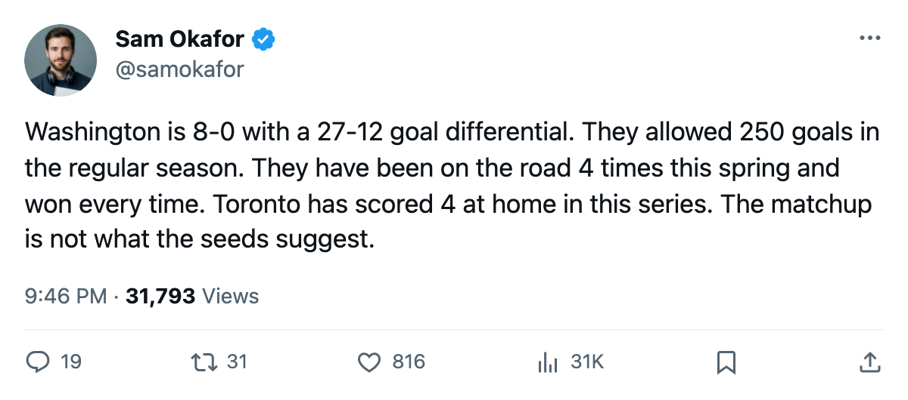

TOR
TORThe Road Ahead: WSH is 8-0, and Bondra's knee opens a door
Whoever wins tonight faces a Washington team that has not lost since the regular season ended, missing its best winger.
 Sam OkaforLeafs beat reporter · Queen City Telegram
Sam OkaforLeafs beat reporter · Queen City Telegram Washington Capitals is 8-0 this spring. The Capitals swept
Washington Capitals is 8-0 this spring. The Capitals swept  Carolina Hurricanes 4-0 in Round 1, outscoring them 13-5, then swept
Carolina Hurricanes 4-0 in Round 1, outscoring them 13-5, then swept  Tampa Bay Lightning 4-0, scoring 14 and allowing 7. Twenty-seven goals on 12 against in 8 games. That is the team sitting across the bracket from tonight's Game 7 winner.
Tampa Bay Lightning 4-0, scoring 14 and allowing 7. Twenty-seven goals on 12 against in 8 games. That is the team sitting across the bracket from tonight's Game 7 winner.
The goaltender
 Olaf Kolzig92 won the Vezina last season and grades 502 in the Book. His overall sits below the top goaltenders on this side of the bracket (Luongo 94, Belfour 93), and the Washington roster carries more question marks on the back end than Pittsburgh does. In the regular season, Washington allowed 250 goals against in 82 games. Toronto allowed 190.
Olaf Kolzig92 won the Vezina last season and grades 502 in the Book. His overall sits below the top goaltenders on this side of the bracket (Luongo 94, Belfour 93), and the Washington roster carries more question marks on the back end than Pittsburgh does. In the regular season, Washington allowed 250 goals against in 82 games. Toronto allowed 190.
The absence
 Peter Bondra88 is out with a knee injury through 2005-05-29. He carries an 81 overall. The Capitals' forward group loses its 81-man on the right wing and the top pairings shuffle. A 20-year scorer gone in the middle of a Conference Final run. Washington has enough left to beat you; the point is that the run just got harder.
Peter Bondra88 is out with a knee injury through 2005-05-29. He carries an 81 overall. The Capitals' forward group loses its 81-man on the right wing and the top pairings shuffle. A 20-year scorer gone in the middle of a Conference Final run. Washington has enough left to beat you; the point is that the run just got harder.
The schedule
If Toronto advances, the series opens at the Air Canada Centre on 2005-05-06. The next five scheduled games for Toronto are all Washington: 2005-05-06 home, 2005-05-10 away, 2005-05-12 away, 2005-05-14 home, 2005-05-16 away. That is a long series with two of the first three on the road.
Maxime Ouellet86 (Toronto backup) faces his old club every night of that series. He left Washington on 2005-01-25.  Karel Pilar76 (Washington) faces his old club the same nights. Both men will be watching from the bench or the crease.
Karel Pilar76 (Washington) faces his old club the same nights. Both men will be watching from the bench or the crease.
What Washington does well
The Capitals' regular-season record of 39-26-8 (104 points) hides a 29-12 road record, the best road mark of any Eastern team. They travel well. They have done nothing but travel this spring, winning at Carolina Hurricanes twice and at Tampa Bay Lightning twice.
The scoring depth is hard to see from what the record carries (individual playoff scorer data for Washington is not logged on the desk sheet), but the goal totals tell the story: 27 goals in 8 games against two clubs that each finished above 100 points, production from everywhere.
Toronto's answer must come from the top three lines, because that is where all 14 playoff goals have come from. Four different players have scored for this team this spring. Washington's 27 have not been tallied individually but the distribution across two sweeps suggests it is wider than 4 names.
